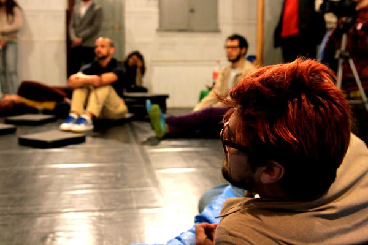
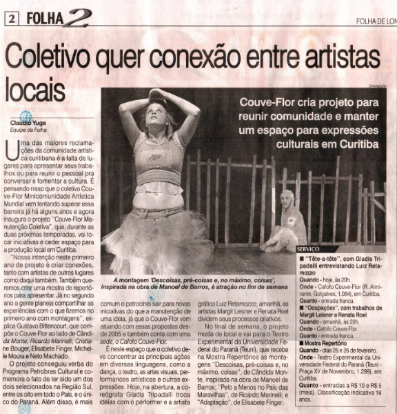
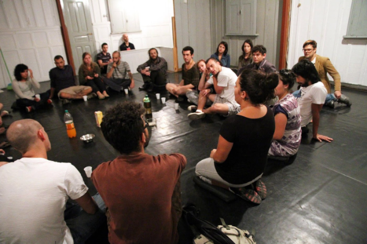

Couve-Flor

2010–2012
Couve-Flor Manutenção Coletiva
Prêmio Petrobras de manutenção de grupos e companhias.
Um dos dois projetos selecionados na Região Sul, entre oito no país — e o único do Paraná
O prêmio era incomum: quase todo edital financia projeto novo, e esse financiava a manutenção de um coletivo que já existia desde 2005. Era exatamente do que a gente precisava — não de mais uma estreia, mas de continuar.
Ações no Cafofo Couve-Flor e na cidade: Tête-à-Tête (encontros entre artistas), Ocupações, e a Mostra de Repertórios no Teatro Cleon Jacques, Curitiba, em agosto de 2011 — com trabalhos de Gustavo Bitencourt, Neto Machado, Cristiane Bouger e Michelle Moura, mais os convidados Eduardo Fukushima e Bernardo Stumpf.
Folha de Londrina, 2 de maio de 2011.


Encontro no Cafofo Couve-Flor, Curitiba.
20